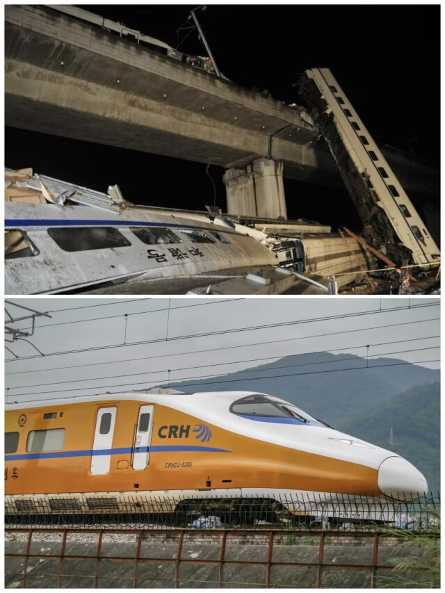

【历史上的今天】| 15载，回望723之痛
2011年7月23日，甬温线受雷击影响，信号设备发生故障。D3115动车组因故低速行驶滞留区间，后方D301收到错误信号正常行驶，未能及时预警，司机潘一恒发现险情果断紧急制动，拼尽全力尝试规避碰撞，但避让不及，两车发生追尾，造成40人遇难，172人受伤。
这场悲剧成为中国高铁发展的重大转折点，进一步推动高铁降速，全国铁路启动大规模安全排查，同时发展理念从追求速度转变为安全优先。事后，后车CRH2-139E改造为CRH2J-0205高速综合检测列车，为铁路安全保驾护航；前车CRH1-046B部分车厢分配至各路局用作实训教具，通过更多培训避免事故重演。事故中潘一恒师傅恪尽职守、舍身向前的精神，纵使危机到来也坚守岗位，保证乘客安全，他的精神也长久为人铭记。
但是逝去的生命再也无法回来，一列永不抵达终点的列车，承载无数家庭无法抹平的伤痛。岁月流转，我们缅怀所有不幸逝去的普通人，致敬舍身尽责的潘一恒师傅。这场沉痛的事故时刻警示世人。15年过去，这一切，不能忘，愿逝者安息，愿事故不再重演。
2011年7月23日，甬温线受雷击影响，信号设备发生故障。D3115动车组因故低速行驶滞留区间，后方D301收到错误信号正常行驶，未能及时预警，司机潘一恒发现险情果断紧急制动，拼尽全力尝试规避碰撞，但避让不及，两车发生追尾，造成40人遇难，172人受伤。
这场悲剧成为中国高铁发展的重大转折点，进一步推动高铁降速，全国铁路启动大规模安全排查，同时发展理念从追求速度转变为安全优先。事后，后车CRH2-139E改造为CRH2J-0205高速综合检测列车，为铁路安全保驾护航；前车CRH1-046B部分车厢分配至各路局用作实训教具，通过更多培训避免事故重演。事故中潘一恒师傅恪尽职守、舍身向前的精神，纵使危机到来也坚守岗位，保证乘客安全，他的精神也长久为人铭记。
但是逝去的生命再也无法回来，一列永不抵达终点的列车，承载无数家庭无法抹平的伤痛。岁月流转，我们缅怀所有不幸逝去的普通人，致敬舍身尽责的潘一恒师傅。这场沉痛的事故时刻警示世人。15年过去，这一切，不能忘，愿逝者安息，愿事故不再重演。
